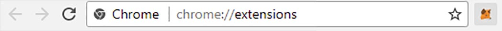

About P3D Tokens and PoWH3D Smart Contract
Congratulations on finding the most exciting crypto project of 2018.
What makes this exciting is that P3Dx is Open Source and connected to the Open Source and Decentralized PoWH3D Ethereum Smart Contract.
What this means is that there is no way for an exit scam. If a website is closed down then you can access your P3D Tokens on another. You can even interact directly with the Ethereum blockchain and Smart Contract if needed.
The PoWH3D Smart Contract was written to encourage continued growth simply by holding the P3D Tokens. Once you have 5 P3D Tokens you can share your Masternode link to gain even more.
How is the Buy and Sell price of P3D Tokens calculated?
There is a 10% premium on the Buy and Sell price and this price is based on the Total P3D Tokens in circulation. The 10% premium is shared with all P3D Token holders based on the percentage they hold. When Tokens are bought they are created and when they are sold they are destroyed.
The P3D Buy price is calculated by using the formula: BuyPrice = (Total_P3D_Tokens + (Total_P3D_Tokens * 10%)) / 100000000
The P3D Sell price is calculated by using the formula: SellPrice = (Total_P3D_Tokens - (Total_P3D_Tokens * 10%)) / 100000000
What does the Masternode get for sharing their link?
When a person shares their Masternode link and the person Buys, the Masternode will receive 33% of the 10% and the remainder will be shared with all token holders.
This only applies when Buying P3D Tokens using their Ethereum Wallet and not when they Buy using their Balance.
How easy is it to cash out?
First off the P3D Tokens and Ethereum in your Balance are in your wallet at all times. You are not giving them to a 3rd party website. You can Sell your P3D Tokens at any time at the current Sell price. Your P3D Tokens are not locked up.
Tips and Suggestions
Be sure to leave a couple dollars worth of Ethereum in your Ethereum Wallet to pay the Gas fees when doing transactions. The amount of Gas used determines the confirmation time of that transaction. 1.1 Gas to 2 Gas is only a few cents and takes under a minute to confirm. No need to spend more. 2 Gas has been under $.10. If you don't have enough Ethereum in your Wallet you will need to deposit more.
Powh3D Resources
P3Dx Open Source Code - The Open Source code for this P3Dx website.
PoWH3D Discord Chat - Original developers and other Token Holders chat room.
robinmorajker.github.io/exponent - The main site created by the PoWH3D developers.
PoWH3D Smart Contract - The PoWH3D Ethereum Smart Contract code.
P3D Token Holders - A listing of all P3D Token holders and their Percentage owned.
Powhchart.com - P3D Pricing and Historical Chart.
Powh3d.eu - PoWH3D Stats and Aggregated Token Holder Statistics.
Getting Started
To get started you're gonna need Metamask or if using Android use Cipher Browser.
Metamask is a kind of browser extension that allows you to set up an Ethereum Wallet that you can use to interact with Smart-Contracts like PoWH3D.
Click the Cute Fox Download Button
You should now have a little fox icon right next to your URL bar on your browser of choice; click that and follow the instructions to set up a wallet. Make sure you absolutely write down your seed phrase.
Metamask updates frequently, and as long as you have that sentence of random words you can always get back to your wallet.
Now that you have a wallet set up in metamask, the P3Dx Exchange should appear correctly! But before you can buy P3D Tokens you need to add funds to your metamask Ethereum Wallet account.

Using the P3Dx Exchange
Depositing Ethereum
Click the MetaMask icon again on your Browser and clicking on the ... icon lets you copy your Ethereum Wallet address. That address works just like any of the other Crypto Currency address you've used on exchanges for withdrawals or deposits and this is where you would send some Ethereum to.
This is a full fledged ethereum wallet, which can hold not only the ETH you're going to use, but also any ERC20 tokens like P3D you collect.
If you're not familar with Ethereum the transaction fees paid are referred to as Gas. The amount of Gas specified will determine how long it takes for your transactions to be confirmed. Currently using a Gas value of 2 for Buys is good and a Gas value of 1.1 for using your Balance is ok. These level of fees is under $.10 currently.
Buying P3D Tokens
After your Ethereum Deposit transaction has been confirmed you can now go to the Buy P3D Tokens section on the P3Dx Exchange to buy P3D Tokens. Be sure to always leave a few dollars in your Ethereum Wallet to pay for further Gas fees.
Buying P3D Tokens using your Balance
As P3D Tokens are Bought, Sold and Transfered there is a 10% premium on each transaction that is distributed amongst all P3D Token holders. The percentage earned of the 10% is determined based on your personal holdings of P3D Tokens divided by the circulating supply of P3D Tokens. You can see this percentage in the Tokens box under MY HOLDINGS on the P3Dx Exchange screen.
Once you hold 5 P3D Tokens share your Masternode link to others and you can earn 33% of the 10% premium paid when people Buy P3D Tokens. The 33% is not earned with Buys from your Balance, Selling or Tranfers.
To Buy P3D Tokens using your Balance click the Buy using Balance button and your Ethereum Wallet will pop up. You can now set the Gas amount to 1.1 to pay lower fees.
You are interacting with the PoWH3D Smart Contract and so the only decrease in the amount of Ethereum in your Wallet will be from the Gas fees and this is why you should leave a few dollars worth of Ethereum in your Wallet to cover these small Gas fees.
Withdraw Balance
You can also withdraw your Balance back to your Ethereum Wallet which requires a Gas fee. Again it is recommended to use just 1.1 Gas which is a few cents but still needs to be in your Ethereum Wallet. If you ever end up with 0 ETH in your Ethereum Wallet you will need to Deposit more ETH from another Wallet of yours.
Selling P3D Tokens
You can Sell your P3D Tokens at any time. Simply go to the SELL P3D TOKENS section and type in the # of P3D Tokens you want to Sell and click Sell.
Your Ethereum Wallet will pop up and requires a Gas fee. You can use 1.1 Gas for this.
After a minute you will see the Eth in your Balance box and from here you can click on the Withdraw Balance button.
So selling P3D tokens and receiving the Ethereum back to your Wallet requires 2 transactions. Once in your Ethereum Wallet you can then Send it out to any other Ethereum Wallet or Ethereum Exchange you wish.
Transferring P3D Tokens
You can transfer your P3D Tokens to another Ethereum Wallet but remember there is a 10% premium paid and will reduce the # of Tokens sent by that amount.
To transfer P3D Tokens go to the TRANSFER P3D section on the P3Dx Exchange and type in the Ethereum Wallet address you are sending P3D Tokens to and the # of Tokens you would like to send and press Transfer.
Your Ethereum Wallet will pop up and requires a Gas fee. You can use 1.1 Gas for this.
Tip
If you don't go through with a Smart Contract transaction using your Ethereum Wallet you need to click on the Reject button on the Ethereum Wallet.
If the transaction is Pending for too long that means not enough Gas was used or you ran out of Ethereum to pay for the Gas. You can click on the Retry with higher gas price link for that transaction and put in a higher Gas amount. Or you can click on the link and press Reject to cancel it.
Armed with this knowledge, you are now well equipped to compete with others on the P3Dx Exchange, Go ahead, have fun; and remember to never put in anything you can't afford to lose.